CS143 Project 5: Structure from Motion
Overview
In general, people take many photos of the same object in many different view points. Even in videos, I can extract images of the same object in many different view points. The project tries to use the extra informations gained by considering the relationships betIen the images of the same object in different viewpoints and then create a 3D model based on the information gathered.
In this project, I first find keypoints using Harris corner detector. Then I use simplified version of Lucus-Kanade method to track features in the given video (or more accurately the given sequence of images), and then use the structure from motion algorithm to estimate the struction of the object in 3D.
Methodology
- Find features
- Track the features over the sequence of images
- Finally estimate the 3D structure
1. Find Features
In this project, I use Harris Corner Detector to select the keypoints. The harris corner detector works pretty Ill with the test video given as the object is the hotel, a struction, with Ill defined corners.
2. Track the features
In order to track the keypoints selected in the step 1, I used Kanade-Lucas-Tomasi tracker. For this, I assumed the followings:
- Brightness constancy: I assume that the brightness of a point stays the same throughout the video despite its current location.
- Small motion: I assume that the movement of the points are small
- Spatial coherence: I assume that the points move like their neighbors
The Kanade-Lucas-Tomasi tracker used is a simplified version. Coarse-to-fine KLT(the iterative KLT to somewhat deal with big motions) is not used.
Optimization Note: In optical_flow, I noted that one can calculate entire u, v using convolution and simple linear algebra. So the calculation is done matrixwise, not pointwise, making the pipeline much faster.
3. Structure from Motion
- Contruct a measurement matrix D: D(i, j) for the first N i's correspond to the x coordinates of the keypoints and D(i, j) for the next N i's correspond to the y coordinates of the keypoints
- Using singular value decomposition let X = UWV. Then let U3 = U(:, 1:3), V3 = V(:, 1:3), and W3 = W(1:3, 1:3).
- Create the motion and shape matrices: Mhat = U3*W3^0.5 and Shat = W3^0.5*V3'. Note that both the matrices are affine ambiguous
- Eliminate the affine ambiguity as shown in the instructions.
Results
Keypoints tracking
Keypoints at frames:
| at frame 1: |
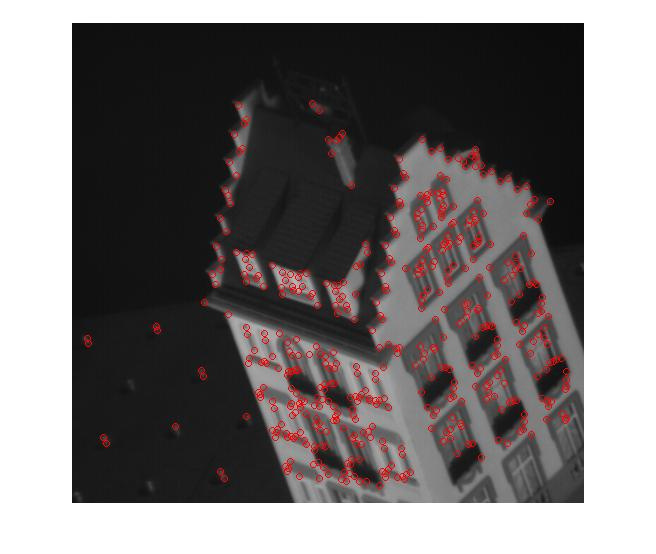 |
| at frame 10: |
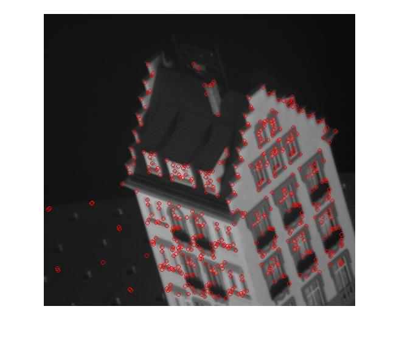
|
| at frame 20: |
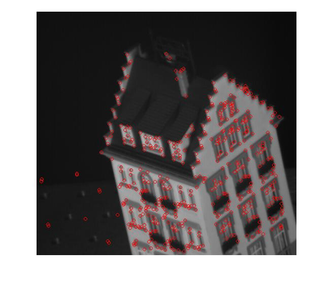 |
| at frame 30: |
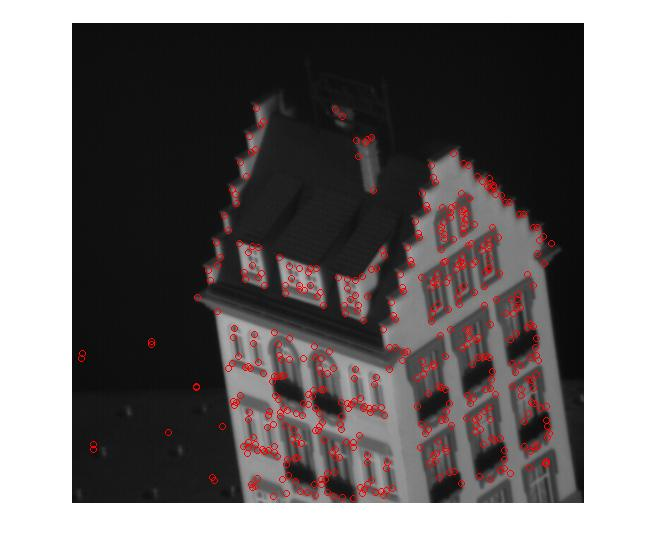 |
| at frame 40: |
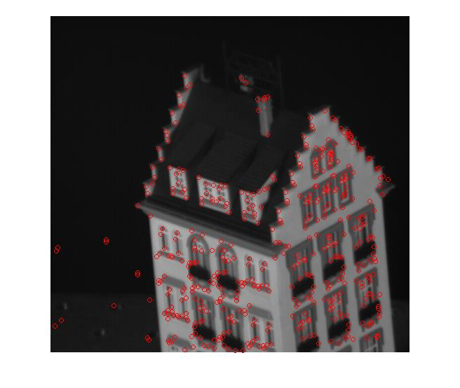 |
| at frame 50: |
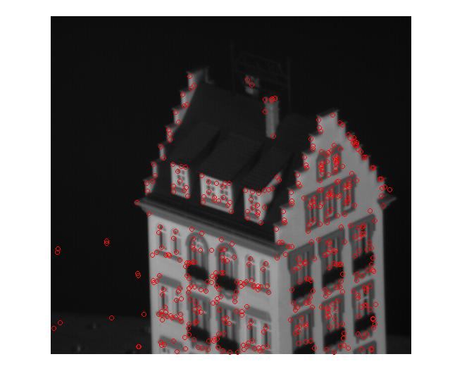 |
20 Keypoints movement over the frames:
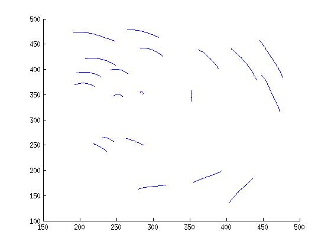
The keypoints that moved out of the picture in the video:
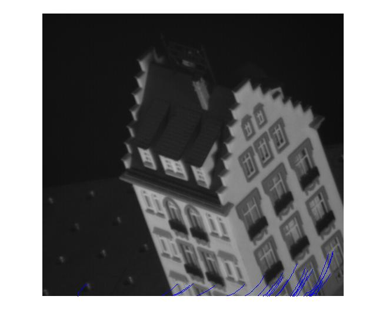
3D model at different viewpoints.
| 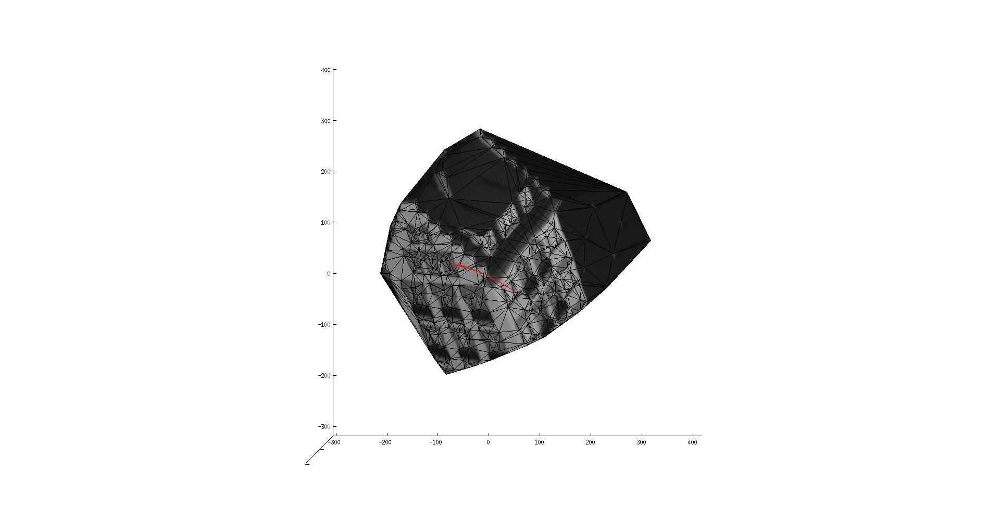 |
| 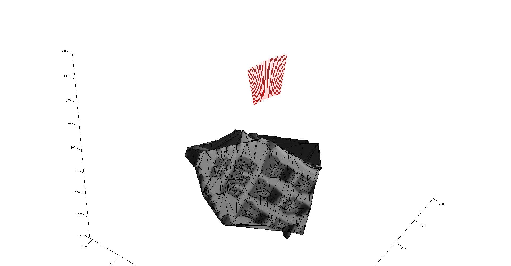 |
| 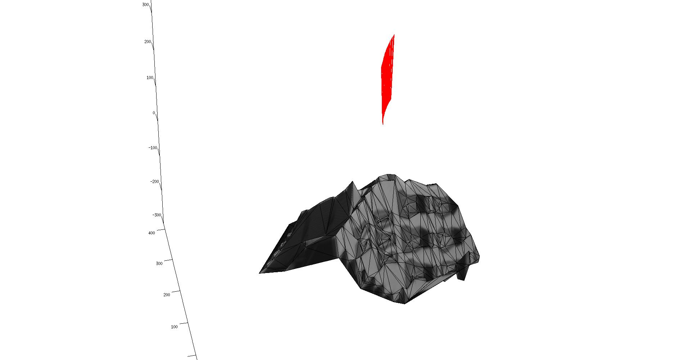 |
| 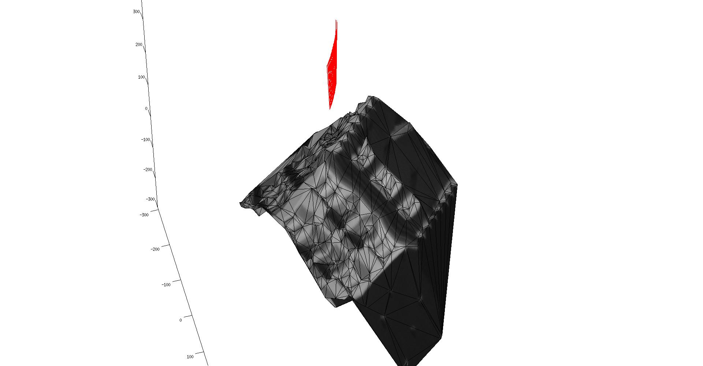 |
| 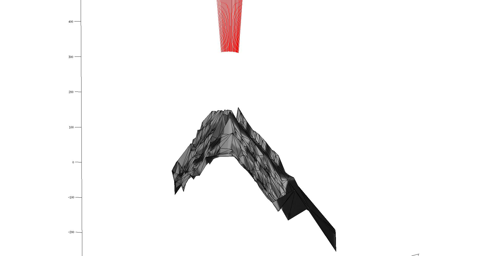 |
camera positions at different dimentions
| 3D path |
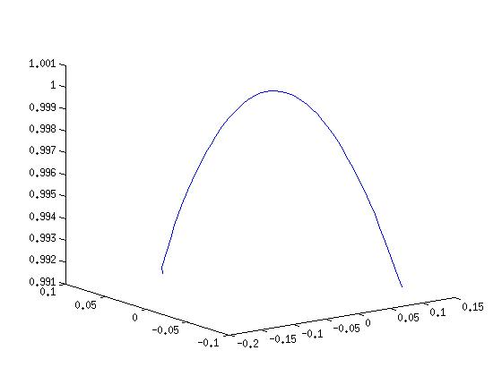 |
| x coordinate |
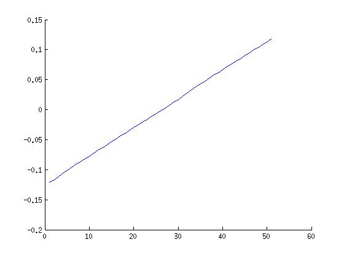 |
| y coordinate |
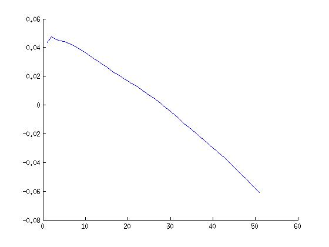 |
| z coordinate |
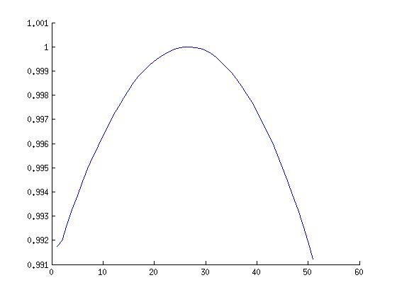 |